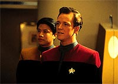
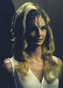
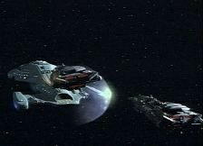
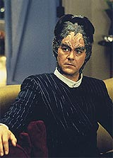
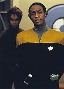

|
MANCHETE
DO EPISÓDIO
Enigma
pouco original fornece chance
de desenvolvimento para Tuvok
Episódio
anterior | Próximo
episódio
Sinopse:
Data Estelar: desconhecida.
 Kim
retorna sozinho de uma viagem que fez com Tom Paris ao planeta Benea.
Depois de Tom se envolver com a atraente esposa de um cientista, ele
é assassinado.
O piloto da Voyager é acusado e sentenciado, de acordo com a lei de
Benea. Implantes são colocados em Paris, fazendo com que reviva os
últimos momentos de "sua" vítima a cada 14 horas.
Janeway, apesar de conhecer a fama de Tom, analisa a situação e
tenta provar que ele não é culpado. O corpo de Paris reage mal à
tecnologia de implantes dos Beneans, que passa a causar danos
neurais.
 Por
isso, Janeway consegue autorização para levá-lo de volta à
Voyager. Em seguida, uma raça inimiga dos Benea, os Numiris, passa
a atacar a Voyager. Tuvok une-se à mente de Tom e descobre, através
da lógica Vulcana, quem realmente assassinou o cientista.
Foi o médico local, um espião a serviço dos Numiris, que quis
implicar Tom para usar os implantes como um meio para transmitir
informações secretas a seus comparsas Numiris.
Comentários:
 A
primeira impressão de "Ex Post Facto" é a de que
é um episódio centrado em Tom Paris. Na verdade, trata-se apenas
de uma especulação inicial. Na verdade, o episódio é todo feito
para desenvolver o personagem Tuvok, com sua investigação para
provar a inocência do piloto.
Embora a história não seja das mais interessantes ou originais
(tendo sido feita várias vezes na história de Jornada, em
versões suavemente diferentes, com maior ou menor grau de sucesso),
uma coisa deve-se louvar: o episódio tem o mérito raro de
dispensar a tecnobaboseira e se sustentar pelo próprio enredo.
 É
bem verdade que Tuvok tira a solução do mistério da cartola,
apresentando várias evidências em sequência, em uma cena de dar
inveja a um episódio de "Scooby Doo". Mas é interessante
notar que a solução é tão verossímil que parece até a vida
imitando a arte.
A peça de evidência principal (a altura do assassino) também foi
a chave para desvendar a farsa do laudo da morte de PC Farias feita
pelo legista Badan Palhares. Na ocasião, o médico adulterou a
altura do morto para justificar a tese de que sua namorada tinha
cometido o crime.
Também é interessante o modo pelo qual os produtores optaram por
contar a história, partindo de um "flashback". O
resultado prático disso foi um prólogo mais interessante e
atraente. O recurso, que até então pouco havia sido usado em Jornada,
apareceria mais vezes em Voyager.
 Enquanto
Tuvok mostrava toda a sua "vulcanice", Kes e o Doutor
continuaram seus diálogos amistosos. Entretanto, nenhum elemento
novo foi adicionado. Somente mais do que já havíamos visto em
outros episódios.
Tecnicamente, o episódio tem bonita fotografia, em especial nas
cenas que mostram a punição de Paris, feitas em preto e branco.
Ponto negativo apenas para a reciclagem do planeta: trata-se de
Angel I, visto no episódio "Angel One", do
primeiro ano de A Nova Geração.
Citações:
Janeway - "That's one
more trick you won't be able to use again when we get home."
("Esse é um truque que você não poderá usar de novo quando
voltarmos para casa.")
Chakotay - "I have more."
("Eu tenho outros.")
Trivia:
 Este episódio foi dirigido por LeVar
Burton, o Geordi La Forge da Nova Geração. Ele ainda
voltaria a dirigir outros episódios da série e interpretaria um
Geordi mais velho (e capitão de nave estelar) no 100º episódio de
Voyager, "Timeless", da 5ª temporada.
Este episódio foi dirigido por LeVar
Burton, o Geordi La Forge da Nova Geração. Ele ainda
voltaria a dirigir outros episódios da série e interpretaria um
Geordi mais velho (e capitão de nave estelar) no 100º episódio de
Voyager, "Timeless", da 5ª temporada.
Ficha
técnica:
História de Evan Carlos Somers
Roteiro de Evan Carlos Somers e Michael Piller
Dirigido por LeVar Burton
Exibido em 27/02/1995
Produção: 008
Elenco:
Kate Mulgrew como
Kathryn Janeway
Robert Beltran como Chakotay
Roxann Biggs-Dawson como B'Elanna Torres
Robert Duncan McNeill como Tom Paris
Jennifer Lien como Kes
Ethan Phillips como Neelix
Robert Picardo como Doutor
Tim Russ como Tuvok
Garrett Wang como Harry Kim
Elenco convidado:
Robin McKee como
Lidell
Francis Guinan como ministro Kray
Aaron Lustig como médico
Ray Reinhardt como Tolen Ren
Henry Brown
como o capitão Numiri
Episódio
anterior | Próximo
episódio
|